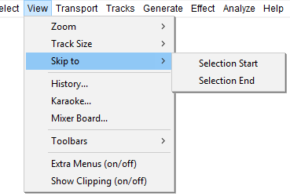

View Menu: Skip to
- Click, or hover, on any menu item in the image to read about that command. Skip the image
- 
Selection Start Ctrl + [ Extra
Attempts to move the left edge of the current selection to the center of the screen, without changing the zoom level. This is useful if you are zoomed far in at the right edge of the selection and then wish to view the left edge, which may be currently off screen. Also if you have lost sight of the selection entirely by scrolling too far, either this or the companion command "Skip to Selection End" (below) will always bring the selection back on screen.
Selection End Ctrl + ] Extra
Attempts to move the right edge of the current selection to the center of the screen, without changing the zoom level. This is useful if you are zoomed far in at the left edge of the selection and then wish to view the right edge.which may be currently off screen. Also if you have lost sight of the selection entirely by scrolling too far, either this or the companion command "Skip to Selection Start" (above) will always bring the selection back on screen.
Tips for usage of Selection Start and Selection End:
|